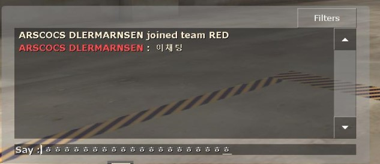
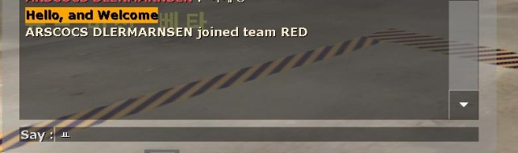

일단 출력, 입력, 이벤트 등 모두다 다른파일에서 가져와야 가능 한겁니다
그래서 sourcemod 라는 파일에서 void OnClientPutInServer(int client) 를 가져올겁니다
그리고 또한 sourcemod 파일에서 void PrintToChat(int client, const char[] format, any... ...)
이라는 함수를 가져올것입나다 이번에는 public 이 필요없습니다 왜냐하면 파일에서 가져오는 함수가 포워드 함수가 아니이기 때문입니다
그리고 public 키워드가 뭔지 까먹으셨다면 다시 보시는것을 추천 드립니다 static, public, const, #define
#include <sourcemod>
public void OnClientPutInServer(int client){
/*
PrintToChat 함수가 하는일:
클라이언트 한테 채팅을 보내는것

1번째 전달인자: 메시지를 보낼 클라이언트
2번째 전달인자: 메시지 내용
*/
PrintToChat(client, "Hello, and Welcome");
}
결과:
